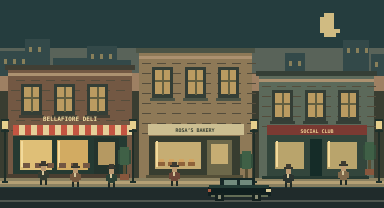

01 / Bellafiore Deli
Associate
The family trusts you with the deli.
Scarcity · Elasticity · Inventory
WELCOME TO THE FAMILY
You are part of the family. First, they trust you with a deli. As you learn to anticipate what your choices change, they trust you with more.
The bread, the bills, the relationships — none of it disappears when you move up. It becomes part of a bigger story.
18 playable episodes · 6 ranks · saves on your device · no account needed

“Make a call. Watch what happens. Tell me what you would do differently. The fancy name can wait.”
Built-in hints guide your experiments. You can also review and share a selected episode with your own AI app.
MORE TRUST. MORE RESPONSIBILITY.
01 / Bellafiore Deli
The family trusts you with the deli.
Scarcity · Elasticity · Inventory
02 / The supply route
Rosa takes the deli counter. You take the bakery and delivery route.
Opportunity cost · Economies of scale · Specialization
03 / The social club
Vito runs deliveries. You manage the neighborhood relationships.
Competition · Repeated games · Auctions
04 / The counting room
Lena manages the books. Expansion, debt, and reserves are now yours.
Credit · Investment · Diversification
05 / The whole neighborhood
The district is yours to look after. Wages, prices, and reputation travel together.
Labor markets · Inflation · Externalities
06 / The waterfront
The harbor opens. Every business you built now depends on a wider world.
Trade · Exchange rates · Interdependence
THE WHOLE ECON LIBRARY
The story connects the ideas. These labs let you investigate them in greater depth, with a route back to your family.
The market counter
Investigate shifts, shortages, taxes, and price controls after the deli shift.
Supply · demand · welfare
Open Supply & Demand Lab →Market Street
See how independent buyers and sellers find a price.
Equilibrium · coordination
Open Invisible Hands →The back room
Eight engines for choice, conflict, dynamic strategy, information, auctions, signals, bargaining, and mechanism design.
The full game theory collection
Open Strategy Studio →The handshake
Face different partner strategies over repeated rounds. Test what survives a second meeting.
Trust · incentives · repetition
Open Prisoner’s Dilemma →The counting room
Use demo or your own historical data to inspect concentration and shared risk.
Returns · correlation · diversification
Open Portfolio Lab →The rainy-day file
Stress a portfolio under explicit assumptions and see which exposures move together.
Shocks · sensitivities · assumptions
Open Scenario Stress Lab →Across town
Step into a separate policy simulation to understand the decisions the family has to live with.
Interest rates · policy lags · inflation
Open Central Banker →The family record
Turn saved analysis from the labs into a report. Campaign journal and backup stay in your Ledger.
Evidence · assumptions · explanation
Open Reports →Deeper labs have independent saves and results. Campaign promotions follow your predictions and adaptations in the story, rather than combining unrelated game scores.
Observe the consequences of a decision. Change one thing and anticipate its effect. Then carry the idea into a changed situation. Your notes help you explain what you experienced; they are never graded for keywords.
The deli is open →